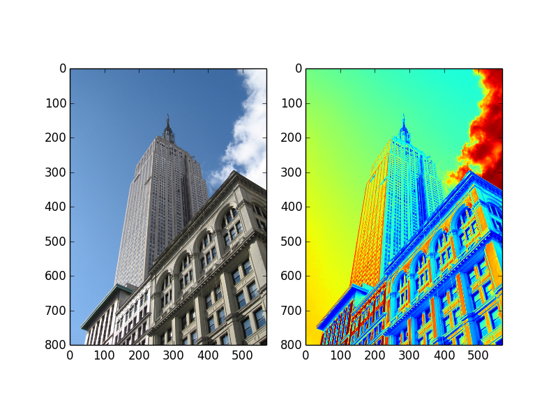

| 著者: | yuhma21 |
|---|
PIL(Python Imaging Library)は画像に関する操作が自在に可能。 もっとも重要なモジュールはImageモジュール。
画像を読み込む
画像を ダウンロード
#!/usr/bin/env python
# -*- coding: utf-8 -*-
from PIL import Image
#画像を読み込む
pil_im = Image.open('empire.jpg')
#画像を読み込んでグレースケールに変換する
im_gray =Image.open('empire.jpg').convert('L')
#画像を表示する
import matplotlib.pyplot as plt
plt.figure()
plt.subplot(121)
plt.imshow(pil_im)
plt.subplot(122)
plt.imshow(im_gray)
plt.show()
コードを実行すると下図のように表示されるはずです
osモジュールを利用してファイルのリストを取得する。
imtools.pyというファイルを作成し下記の命令文を加える
#!/usr/bin/env python
# -*- coding: utf-8 -*-
import os
def get_imlist(path):
return [os.path.join(path, f) for f in os.listdir(path) if f.endswith('.jpg')]
ここで、利用されているosモジュールの関数などを説明。
パスを結合する
>>> import os
>>> p = 'c:\'
>>> f = 'foo.jpg'
>>> os.path.join(p, f)
'c:\foo.jpg'
文字列strでsuffixの文字列で終了している場合、Trueを返す。そうでない場合はFalse
>>> 'foo.png'.endswith('png')
True
>>> 'foo.png'.endswith()
False
画像を切り抜くにはcrop()メソッドを利用する
box = (100, 100, 400, 400)
region = pil_im.crop(box)
切り抜く領域は(左, 上, 右, 下)の座標を指定する。
画像を貼り付けるにはpaste()メソッドを利用する
pil_im.paste(region, box)
画像のサイズを変更するには、resizeメソッドを利用する。その際、サイズをタプルで指定する
画像を回転するには、rotate()メソッドを利用する。引数は時計回りの角度(degree)で指定する
#!/usr/bin/env python
# -*- coding: utf-8 -*-
from PIL import Image
import matplotlib.pyplot as plt
#画像を読み込む
pil_im = Image.open('empire.jpg')
#画像をコピーする領域をタプルに格納
region = (100, 100, 400, 400)
#画像をコピーして格納
cpy_im = pil_im.crop(region)
#画像を回転して格納
cpy_im = cpy_im.rotate(180)
#コピーした位置と同じ位置に貼り付け
pil_im.paste(cpy_im, region)
#画像を表示
plt.figure()
plt.imshow(pil_im)
plt.show()
matplotlibはpythonでグラフを書くためのモジュール
通常、下記のように宣言する
import matplotlib.pyplot as plt
source
PILモジュールを利用して読み込んだ画像は、Numpyモジュールのndarrayオブジェクトで キャストすることにより、配列に変換することが出来る。
ndarrayを画像に戻すときは、PILのImage.fromarray(obj)メソッドを活用する。 Image.frombufferでもいいらしい。
{kind=link}